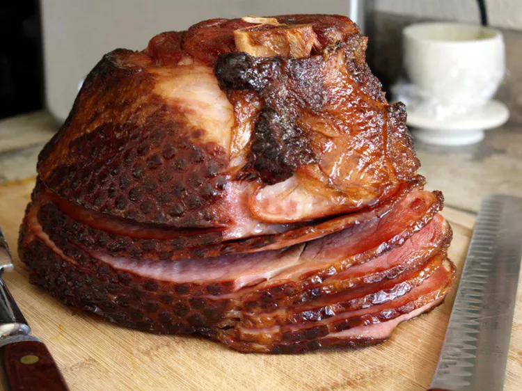

Blackberry Jalapeno Glazed Ham
Ingredients
- 1 (8 pound) boneless ham
- 2 cups packed brown sugar
- 1 (12 fluid ounce) can or bottle cola-flavored carbonated beverage
- 1 cup grape juice
- 1 (20 ounce) can sliced pineapple, drained with juice reserved
Directions
- Preheat the oven to 325 degrees F (165 degrees C).
- Use a knife to score diagonal lines onto ham, about 1 inch apart. Place ham in a large roasting pan and pat brown sugar over entire surface. (It is okay if some sugar falls into the pan.)
- Bake in the preheated oven until sugar begins to melt off ham, about 30 minutes. Remove ham from the oven and pour cola, grape juice, and reserved pineapple juice into the pan. Baste ham with cola mixture and return to the oven.
- Continue basting every 20 minutes, for about 2 hours. Cut pineapple rings in half. Remove ham from the oven and float pineapple rings in the drippings. Allow ham to rest for about 10 minutes, then slice and serve with pineapple and sauce.
